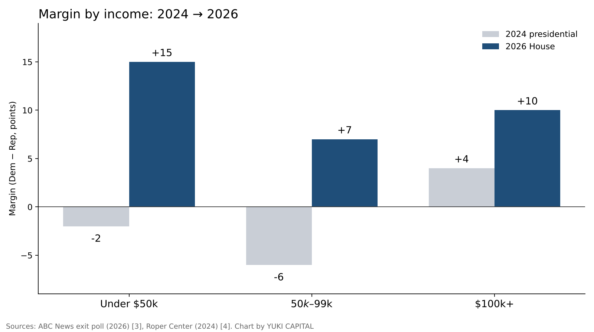
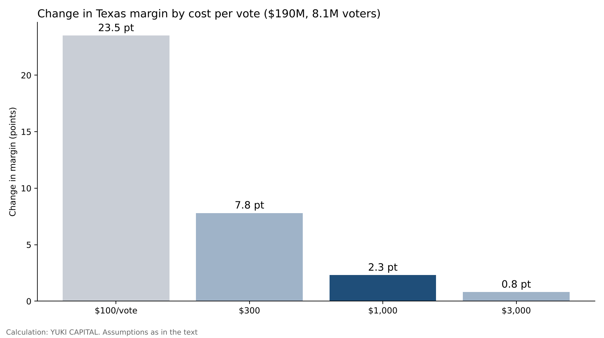

How many votes could Musk's $474 million move? Testing it against donations, voting by income and past midterms
In the US midterm elections of November 3, 2026, Democrats retook majorities in both the Senate and the House [7]. The individual who spent the most in this election was reportedly Elon Musk. The total was about $474 million, and the Texas Senate race alone is thought to have drawn about $190 million [6].
Filings with the Federal Election Commission (FEC) confirm $158 million in contributions to the Senate Leadership Fund, a Republican-aligned political group [1]. In that same Texas, Democrat James Talarico defeated Republican Ken Paxton [11].
This piece asks one question. How many votes can Musk's money be estimated to have moved? I test it with three yardsticks: the size of the donations, voting by income, and past midterm elections.

Question and background
First, three definitions. A super PAC is a political group that may raise unlimited money from individuals and companies and spend it on advertising and other activity, on the condition that it does not coordinate with candidates. A midterm election is the congressional election held two years after a presidential election. The margin is the gap in vote share with the runner-up, expressed in percentage points.
In the United States, since a 2010 Supreme Court ruling, large donations through super PACs have come to make up a large share of election money. An election in which one wealthy individual spends hundreds of millions of dollars is a typical case. The 2026 Texas Senate race had passed $500 million in total spending by mid-October, a record for a Senate race in the state [11]. Musk-linked money of about $190 million amounts to roughly 40% of that.
I framed the question as how many votes the money moved because win-or-lose alone cannot separate the effect of money from the overall tide of the election. Heavy spending on the losing side does not mean the money had no effect. Conversely, the money spent by the winning side is not necessarily the whole reason it won. The effect of money can only be estimated as what remains after removing the overall tide.
Data and method
I use six primary sources. The FEC filings of the Senate Leadership Fund and America PAC [1][2], the 2026 national exit poll joined by ABC News and others (about 78,000 respondents) [3], the 2024 exit poll compiled by the Roper Center at Cornell University [4], midterm seat statistics from the American Presidency Project at UC Santa Barbara [5], and two papers measuring the effects of campaigns [8][9]. Reporting fills in the total and the uses of the donations [6].
The method has three parts. First, I divide the Musk-linked money spent on the Texas Senate race by the number of voters in the state to get a per-voter amount. For the number of voters I use the 2022 Texas figure from the previous midterm, about 8.1 million, as a guide [10].
Second, I calculate how many votes that money moved by assuming a "cost to move one vote." The formulas are: votes moved = amount spent ÷ cost per vote, and change in margin (points) = votes moved ÷ number of voters × 100.
Third, I line up voting by income in the 2024 presidential race and the 2026 House races to see which groups moved and by how much. Because this compares elections for different offices, I treat the numbers as a guide to the trend.
The 2026 exit poll asked household income in six brackets [3]. The 2024 figures come from that year's exit poll as organized by a university research center, with income in three brackets [4]. So the comparison is limited to three groups: under $50,000, $50,000–$99,999, and $100,000 and over. The margin is expressed as the Democratic share minus the Republican share.
Results: the size of the money and the shift by income
| Item | Figure | Source |
|---|---|---|
| Musk's total election spending (reported) | About $474 million | Reporting [6] |
| Contributions to the Senate Leadership Fund (two in September) | $75 million + $83 million = $158 million | FEC [1] |
| Musk-linked spending on the Texas Senate race (estimate) | About $190 million | Reporting [6] |
| Total spending on the Texas Senate race (mid-October) | Over $500 million | Reporting [11] |
| Per Texas voter | About $23 ($190 million ÷ 8.1 million) | Calculation |
| House seats lost by the president's party in midterms (1934–2018 average) | 28 seats | Presidency Project [5] |
| Senate seats, same basis | 4 seats | Presidency Project [5] |
That works out to about $23 spent per Texas voter. Because TV and video ads reach each person many times, the pressure measured in contacts per person must have been even greater.
Across the whole election, dividing $474 million by the roughly 107 million voters in the 2022 House races gives about $4.40 per voter [12]. The money was not spread thinly across the country but concentrated in a few states such as Texas. The per-voter amount in Texas alone is more than five times the national average.
Voting by income took the shape in the chart below. In the 2024 presidential race, Trump led by 2 points among those earning under $50,000 and by 6 points among those earning $50,000–$99,999 [4]. In the 2026 House races, Democrats led by 15 points in the under-$50,000 group and by 7 points in the $50,000–$99,999 group [3].

The lower the income, the larger the shift. By this calculation, the under-$50,000 group moved 17 points toward Democrats, the $50,000–$99,999 group 13 points, and the $100,000-and-over group 6 points. Among those earning $300,000 or more, Democrats led by 21 points [3].
The under-$50,000 group makes up 27% of voters [3]. Converted to the overall margin, this group's 17-point shift equals about 4.6 points. It is a rough comparison that sets a national figure beside one state, but it is close to twice the estimated effect of money we will see below (2.3 points at $1,000 per vote).
Sensitivity analysis: varying the price of a vote
I set the cost of moving one vote at four levels: $100, $300, $1,000 and $3,000. The cheaper the cost, the more votes the same money moves.
| Cost to move one vote | Votes moved (at $190 million) | Change in margin |
|---|---|---|
| $100 | 1.9 million | 23.5 points |
| $300 | 630,000 | 7.8 points |
| $1,000 | 190,000 | 2.3 points |
| $3,000 | 63,000 | 0.8 points |

At $100 per vote, the money could have moved the Texas margin by more than 20 points. Since no gap that large appeared in reality, it is natural to conclude this assumption is too generous.
Research measuring the effects of campaigns supports the $1,000-and-up side instead. A study combining 49 experiments estimated the average persuasive effect of canvassing and mail in general elections at close to zero [8]. A study comparing races in which the same candidate ran twice also concluded that the effect of spending is small [9]. The former study, however, also reports persuasive effects early in campaigns and in primaries, so it does not claim the effect is zero [8].
At $1,000 per vote, about 190,000 votes moved, or 2.3 points of margin. That is enough to decide a close state, but not enough to reverse the tide of the whole election.
Discussion
There are two opposing views. The first is that without the money, Republicans would have lost by even more. On this view, Musk's money narrowed the defeat and was not without effect. My calculation also leaves open the possibility that it pushed back a little over 2 points at $1,000 per vote.
The second is that the large donations themselves backfired. The sight of a wealthy person pouring huge sums into an election may have looked to voters like "politics for the rich." The fact that lower-income groups shifted more toward Democrats does not contradict this view. But frustration with prices and the economy can explain the same pattern, so the donations cannot be called the cause.
The limits of the data are also clear. The 2024 and 2026 exit polls differ in both the type of election and the survey method [3][4]. Income is self-reported, and those who did not answer are not in the figures. The number of Texas voters is set at the 2022 figure, not the final 2026 count [10]. Musk's total spending and its breakdown are reported estimates, and only part of it can be confirmed in FEC filings [1][2][6].
Compared with past midterms, it is not unusual for the president's party to lose seats. On average from 1934 to 2018, it lost 28 House seats and 4 Senate seats [5]. This result can be seen as falling within that average tide. In the Senate, however, Democrats are reported to be on track to take seven seats from Republicans, above the average of four [13]. That means Republicans lost by more than average in the Senate, where the money was most concentrated.
I set three tests for checking the answer. When certified vote counts come in for each state, is the Texas margin smaller than the national tide? How much of Musk's total spending and its breakdown can be confirmed in the FEC's year-end filings? When the weighting of the 2026 exit poll is final, does the shift by income keep the same shape?
Conclusion
Musk's spending in Texas came to about $23 per voter. On the assumption of "$1,000 or more per vote" that the research suggests, the money can be estimated to have moved the margin by around 2 points.
By income, the group that moved most toward Democrats from 2024 to 2026 was those earning under $50,000. It is likely that changes in how daily life feels explain the movement of votes more than the size of the money.
The tide of the president's party losing in midterms is confirmed by the average since 1934. That means $474 million was not enough to stop it. Isn't there a ceiling on how far money can move votes, a ceiling that matters only in close races?
How I see it
I hold 1,250 shares of SpaceX and 400 of Tesla. I see Musk's donations partly as political leverage for selling Teslas overseas. What the election shook was Musk in his role as a backer of politicians; the two companies' businesses were not shaken.
Running a company in Japan and publishing my total assets every day, I sometimes feel resentment toward the rich firsthand. In America, that resentment seems to have shown up at the ballot box. That is why I do not change my share counts in the two companies based on political wins and losses. I review my reasons to hold only when the businesses break down.
References
- Federal Election Commission (FEC) "Senate Leadership Fund (C00571703) filings" 2026-10-15 https://www.fec.gov/data/committee/C00571703/
- Federal Election Commission (FEC) "America PAC (C00879510) filings" 2026-10-15 https://www.fec.gov/data/committee/C00879510/
- ABC News "Voter Polls for 2026 US House Election: Results & Analysis" 2026-11-04 https://abcnews.com/Elections/polls-2026-us-house-election-results-analysis
- Roper Center for Public Opinion Research, Cornell University "How Groups Voted in 2024" https://ropercenter.cornell.edu/how-groups-voted-2024
- The American Presidency Project, UC Santa Barbara "The 2022 Midterm Elections: What the Historical Data Suggest" https://presidency.ucsb.edu/analyses/the-2022-midterm-elections-what-the-historical-data-suggest
- The Texas Tribune "Elon Musk is the donor behind Senate Republicans' massive rescue mission for Ken Paxton" 2026-10-15 https://texastribune.org/2026/10/15/elon-musk-ken-paxton-donations-senate-gop-super-pac
- Yahoo Finance "Elon Musk's $474 million election bet" 2026-11-04 https://finance.yahoo.com/markets/stocks/articles/elon-musks-474-million-election-195142581.html
- Joshua L. Kalla, David E. Broockman "The Minimal Persuasive Effects of Campaign Contact in General Elections: Evidence from 49 Field Experiments" American Political Science Review 112(1), 2018 https://doi.org/10.1017/S0003055417000363
- Steven D. Levitt "Using Repeat Challengers to Estimate the Effect of Campaign Spending on Election Outcomes in the U.S. House" Journal of Political Economy 102(4), 1994 https://doi.org/10.1086/261954
- Texas Secretary of State "Turnout and Voter Registration Figures (1970-current)" https://www.sos.state.tx.us/elections/historical/70-92.shtml
- CBS News "James Talarico wins Texas 2026 Senate election, flipping seat for Democrats" 2026-11-04 https://www.cbsnews.com/news/texas-2026-senate-james-talarico-ken-paxton/
- Federal Election Commission (FEC) "Federal Elections 2022: Election Results for the U.S. President, the U.S. Senate and the U.S. House of Representatives" 2023 https://www.fec.gov/introduction-campaign-finance/election-results-and-voting-information/
- TheStreet "Stock Market Today: Dow, S&P 500, Nasdaq updates Nov. 4, 2026" 2026-11-04 https://www.thestreet.com/stock-market-today/stock-market-today-dow-jones-sp-500-nasdaq-updates-nov-04-2026
Charts and header image by YUKI CAPITAL
I record my daily numbers and decisions on X.